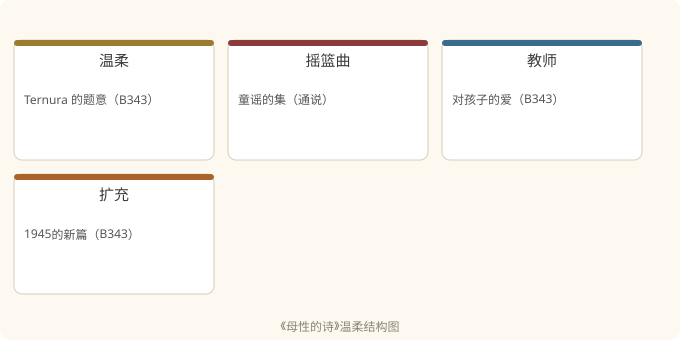

母性的诗
一、基本信息
| 作者 | 加夫列拉·米斯特拉尔 |
|---|---|
| 成书/出版 | 1924年（Britannica B343：Ternura (1924, 1945扩；'Tenderness')——中译名待核） Gabriela Mistral — Encyclopaedia Britannica（百科全书） |
| 国别/地区 | 智利 |
| 时代 | 近代 · 20世纪20年代 |
| 体裁 | 诗集 |
| 语言 | 西班牙语 |

《母性的诗》温柔结构图（主题·结构图）
二、创作背景
Britannica（B343）：Ternura——'Tenderness'——1924年初版、1945年扩充——'evidence a broader interest'。
Britannica（B343）：米斯特拉尔——1945诺奖——'love of children and of the downtrodden remained her principal themes'。
题材（通说待核）：母性诗与摇篮曲——'对孩子的爱'的凝集。
三、内容脉络
（通说待核）摇篮曲与童谣的集。
（通说待核）1945年扩充版的新篇。
四、主要人物表
| 人物 | 身份 | 说明 |
|---|---|---|
| 抒情'我' | 教师/母亲形象 | （B343 语系） |
五、主题与艺术特点
- '对孩子的爱'（B343：love of children）。
- '温柔'（Ternura）的题意（书名——通说待核）。
- 摇篮曲的民间体（通说待核）。
六、影响与评论
- Britannica：Ternura (1924, 1945扩)（B343）。
Gabriela Mistral — Encyclopaedia Britannica（百科全书） - Britannica：1945诺奖（B343 交叉）。
Gabriela Mistral — Encyclopaedia Britannica（百科全书）
七、阅读建议
难点
- 摇篮曲的韵。
- '母性'主题的界定。
- 《母性的诗》中译名（《温柔》）待核。
- 西班牙文原版。
米斯特拉尔母性篇；与《荒凉》对读。
八、待核实
- 1924年初版细节待核。
- 1945年扩充篇目待核。
- 中译名两说待核。